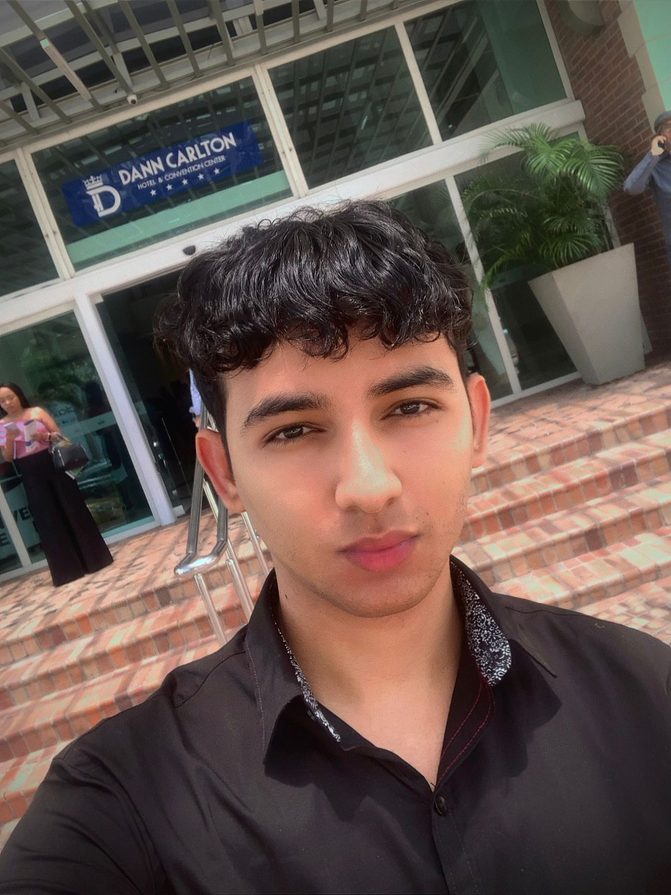
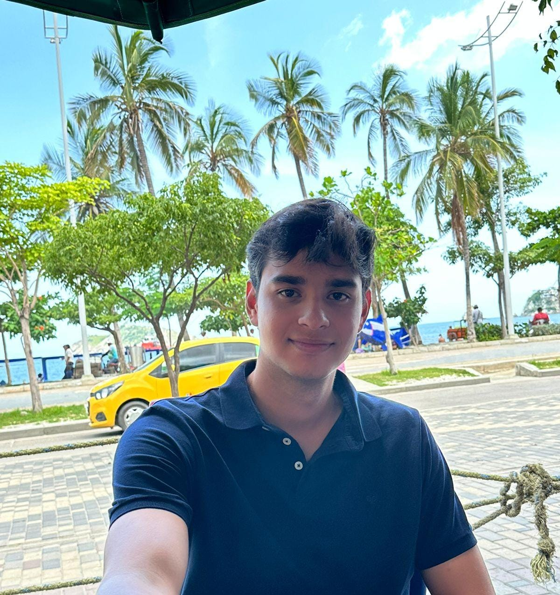
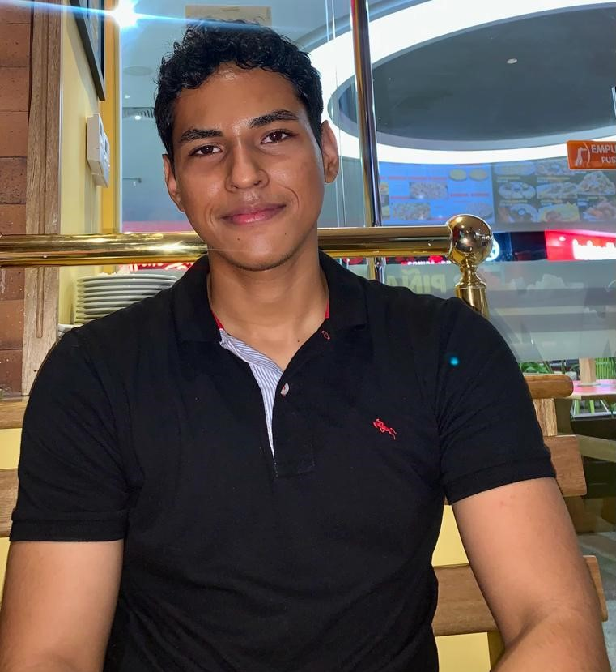
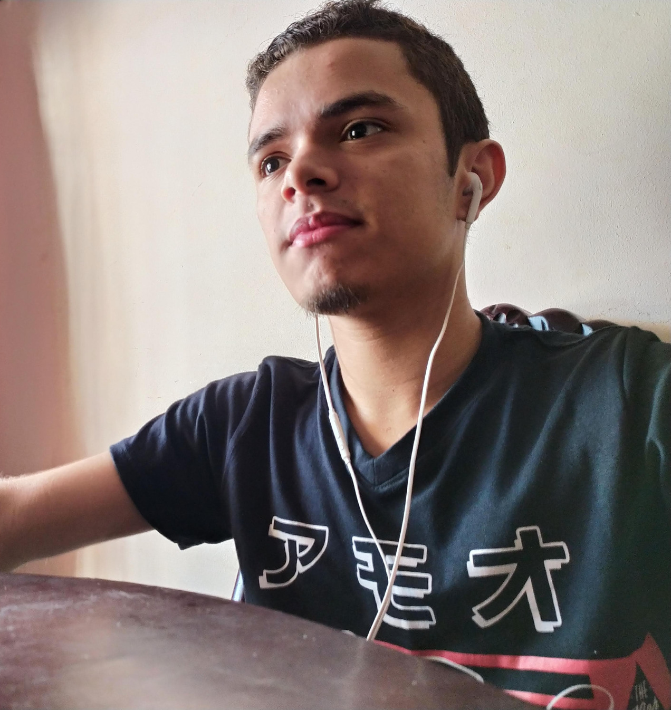
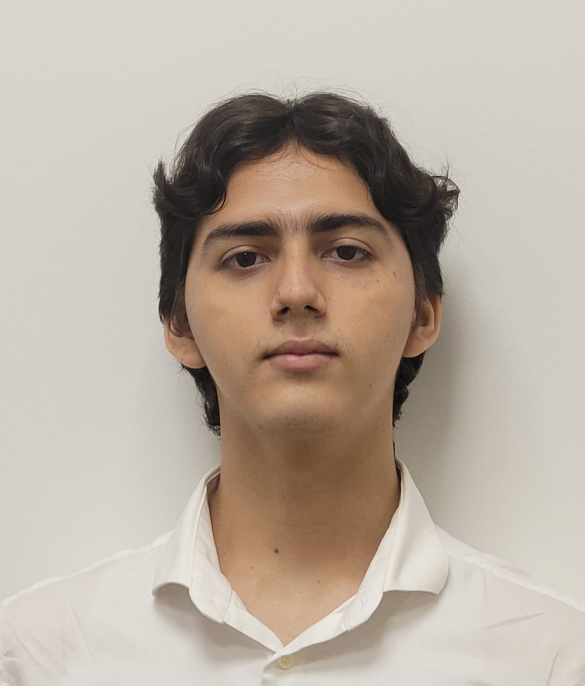

Team
Meet our talented team
Somil Sandoval
My name is Somil Sandoval Diaz, I am a ninth semester Systems Engineering student, passionate about programming and technology. From a very young age, I have cultivated a deep interest in how computers work and in software development. I have a solid background in languages such as Java and Python, as well as experience in databases and data analysis. In addition, I am a science fiction enthusiast, which fuels my curiosity about artificial intelligence and technological innovations.
Kevin James
Hello, my name is Kevin James, I am currently a student at the Universidad del Norte in the undergraduate degree in data science, I am in my seventh semester. With projects in analytics and data visualization I hope in the future to be a great data scientist using Deep learning techniques Machine learning also incorporating Artificial Intelligence into my models
Darwin Charris
Hello, my name is Darwin Charris, I am 20 years old and I am in my eighth semester of systems and computer engineering at the Universidad del Norte. I am very passionate about data analysis, networks, databases, information systems design and IT-focused pedagogy. I have knowledge in languages such as Python, Java, JavaScript and SQL, artificial intelligence modeling, and network and database systems design. I love to learn every day and grow personally and professionally.
Elkin Arteaga
I am Elkin Arteaga, I am 21 years old, and I am currently in the ninth semester of Systems Engineering. From an early age, I have developed a strong interest in programming and technology. I have solid experience in languages such as Rust and Java, as well as knowledge of GNU/Linux and databases. I am passionate about researching open-source projects, as it motivates me to contribute to their development in the future. My curiosity about technological innovations and their impact on the world today drives me to continue learning and growing in this field.
Omar Cifuentes
Hello, I'm Omar Darío Cifuentes Laverde, I'm 20 years old and I'm currently in the seven semester of System Engineering and Computing at Universidad del Norte in Barranquilla, Colombia. I'm passionate about frontend development and have some experience in backend as well. Although I have basic knowledge of databases, I particularly enjoy working on designing and implementing attractive and functional user interfaces. My preferred languages are Python, SQL, and HTML. I love learning every day and meeting new people within the tech community